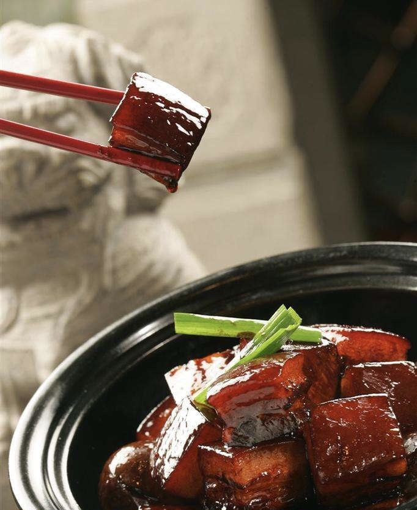
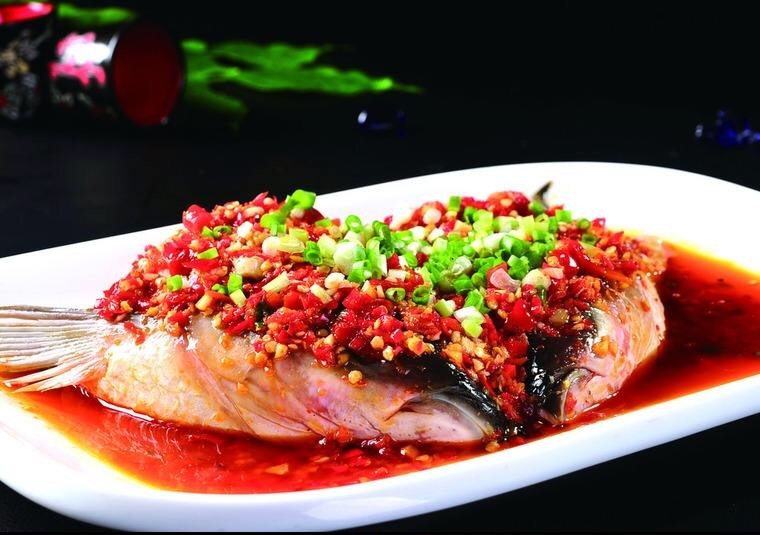
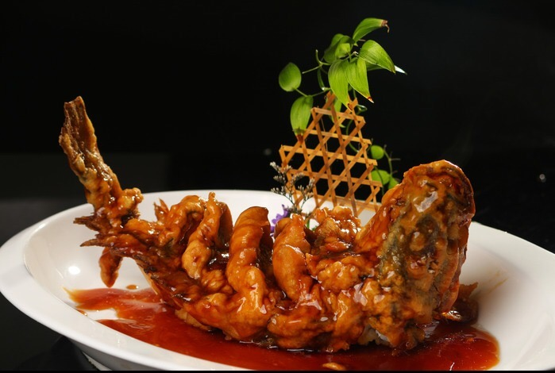

Culinary Art |
Culinary Art |
|  |  |
| Dongpo Pork | Chopping Pepper With Fish Head |
| Dongpo Pork also named Pork braised in brown sauce,Roll meat，Braised pork in Dongpo sauce.It is a famous traditional dish in Jiangnan area | Chopping Pepper With Fish Head is a famous traditional dish of Hunan Province, belonging to Hunan cuisine.It is said that the origin is related to Huang Zongxian, a scholar in Qing Dynasty |
 |
 |
| Kung Pao Chichen | Sweet And Sour Carp |
| Kung Pao Chichen is a famous traditional specialty dish both at home and abroad. It is also summed up as "Beijing court dishes" | Sweet And Sour Carp is a famous traditional dish from Shandong, Ji'nan. It is one of the representative dishes of Shandong. It is said to have started in the Yellow River. |